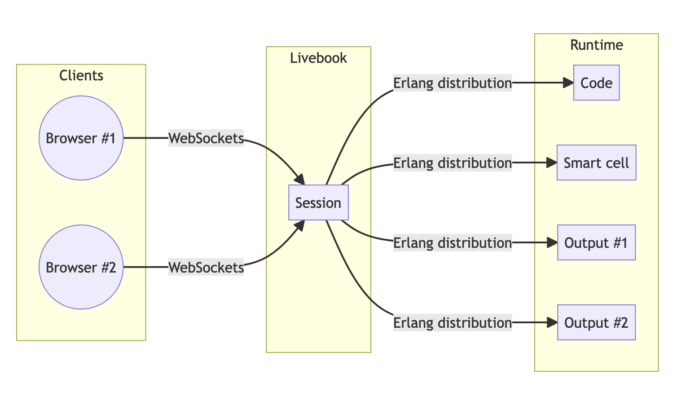
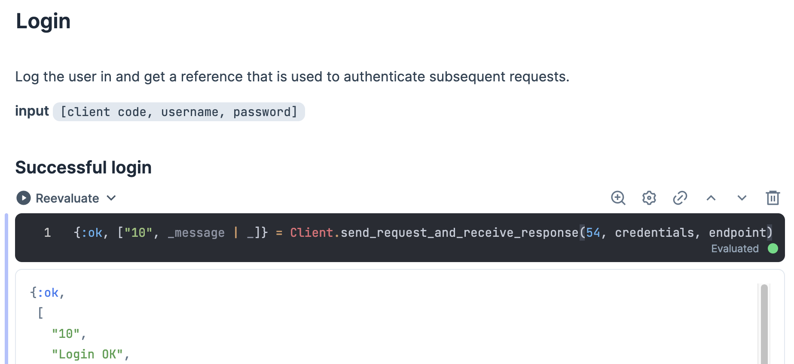
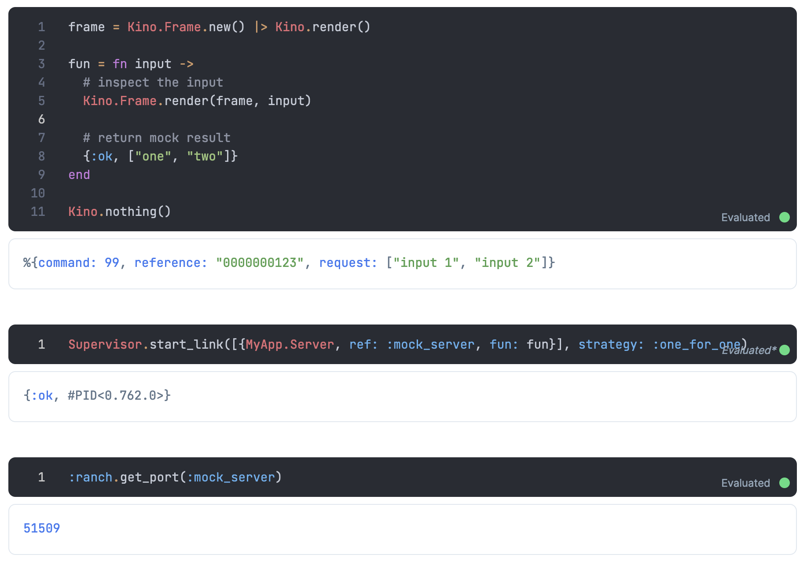
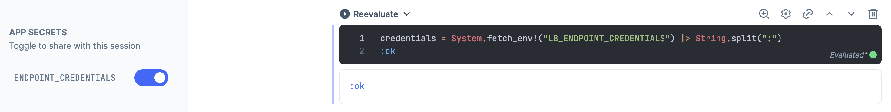
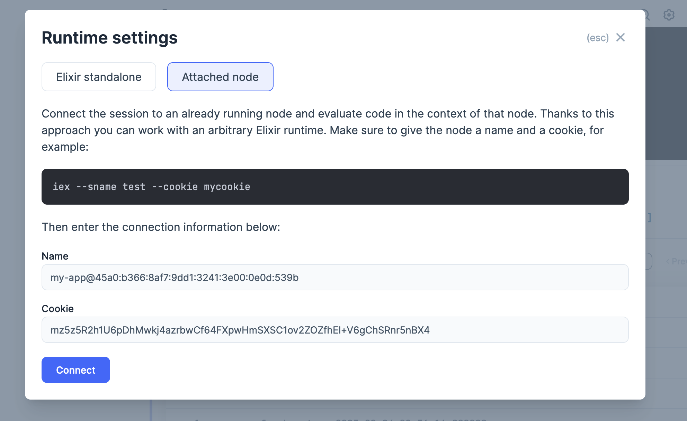

Goals
- Introduction to Livebook
- How to get Livebook
- Livebook stories from the trenches
- Starting in the middle with Livebook
- Automatically save to filesystem
- Autocompletion
- Inline documentation
- Code formatting
Reproducibility
- No global mutable state
- Sequential model for running code cells
- Efficient change tracking - stale cells
- Branching sections
- Package management in the notebook itself
Erlang VM processes and distribution everywhere

Installation
mix escript.install hex livebook
docker run -p 8080:8080 -p 8081:8081 --pull always livebook/livebook
Starting
run the desktop app, or
livebook server
livebook server new
livebook server path/to/directory/
livebook server path/to/some.livemd
livebook server https://example.com/some_public.livemd
livebook server --help
^ lots of startup/deployment options here
“Start with the riskiest parts of your development”
Every project manager
Benefits
- Start in the middle
- Increase transparancy
- Document the process
- Livebooks as shareable deliverables
- Lower the barriers to entry (also for non-coders)
Context
- Small software shop doing custom development
- Many projects at the same time
- Small teams (teams of two)
- Important to have good DX
- Good documentation really helps
- Communication with clients is key
Case #1
Exploring an undocumented legacy API
- Low level TCP protocol
- Use
:gen_tcp to send and receive messages
- Stub out the server for end-to-end scenarios
- Great for documentation purposes (no meta info available)
- Collaborate and create a shared understanding of the system
Documenting the various messages

^ pattern matching is awesome 💜
Case #1
Exploring an undocumented legacy API
- Reproduce bugs (can be referenced in github issues)
- Facilitates discussions on the right level of abstraction
- Verify bugfixes, without having to integrate in a real application
- idea: record test fixtures (thanks Adam Lancaster)
- idea: generate template for documentation
Typical lifecycle with Livebook
- Experiment with code in Livebook
- Maybe add tests
- Add
:path dependency on local mix project
- Promote reusable code to local mix project
Manipulating stub server responses

Managing secrets

^ don't keep sensitive data in your notebooks
Case #2
Concurrent ETL pipeline
- CSV → Postgres
- Concurrent data processing in Livebook
- The power of processes is available
- Fun with Flow
- Using Ecto from Livebook
case #3
Connecting to an online environment
- Remember, it's all erlang distribution behind the scenes
- You need your node's name/sname and cookie
- Great for one-off tasks
- Setup your first admin user
- Poke around your live system
- Implement features without a UI yet
- Remember, it's all live!
Change your runtime settings to "attached node"

Testing in Livebook
- Doctests are executed automatically
- You can write regular ExUnit test cases
dbg() in Livebook
dbg() was recently added (elixir v1.14)- Manipulate your pipeline live